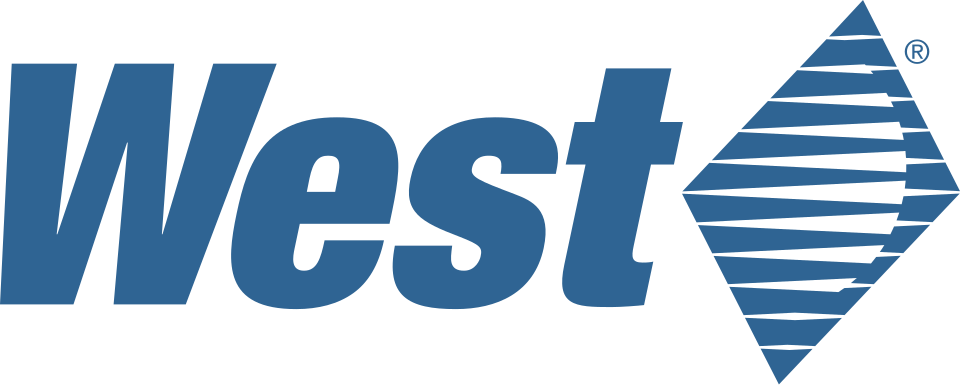

West Pharmaceutical Services (United States)
West Pharmaceutical Services (United States)는 주사제용 의약품 포장재와 약물 전달 시스템을 설계하고 제조하는 미국 기업이다.
최종 업데이트

West Pharmaceutical Services (United States)는 어떤 브랜드인가
이 회사는 주사제 전달에 쓰이는 부품과 시스템, 플라스틱 포장재를 제조한다. 의료 및 소비재 시장을 대상으로 포장 부품과 전달 시스템 구성품을 공급한다.
초기에는 주사제 포장용 고무 부품을 생산해 penicillin과 insulin 생산자가 멸균 환경을 유지하도록 지원했다. 2019년에는 US$1,849.9 million의 매출을 보고했다.
의약품 포장과 전달 체계를 설계부터 제조까지 다룬다는 점이 사업의 중심이다.
West Pharmaceutical Services (United States)는 어떻게 시작되고 성장했나
Herman O. West와 J.R.
Wike가 1923년 필라델피아에서 회사를 설립했다. 초기에는 주사제를 포장하는 고무 부품을 만들며 penicillin과 insulin 생산에 필요한 멸균 환경을 제공했다.
2003년 노스캐롤라이나 Kinston의 고무 제조 공장에서 가연성 polyethylene 분말이 쌓여 폭발 사고가 발생했다. 2005년에는 Scottsdale의 The Tech Group과 Ra’anana의 Medimop Medical Projects Ltd.를 인수했다.
West Pharmaceutical Services (United States)의 브랜드 아이덴티티는 무엇인가
주사제의 멸균 포장에 필요한 고무 부품에서 출발해 포장재와 약물 전달 시스템을 함께 설계하고 제조한다는 점이 구별점이다.
West Pharmaceutical Services (United States)의 대표 제품과 서비스는 무엇인가
주요 사업은 주사제용 의약품 포장재와 약물 전달 시스템의 설계 및 제조이다. 주사제 전달에 필요한 각종 부품과 시스템을 만들고, 플라스틱 포장재와 전달 장치 구성품도 생산한다.
제품과 시스템은 의료 시장뿐 아니라 소비재 시장에도 공급한다. 초기 사업을 구성한 주사제 포장용 고무 부품은 penicillin과 insulin 생산 과정에서 멸균 환경을 제공하는 용도로 사용했다.
West Pharmaceutical Services (United States)는 지금 어떤 상태인가
회사는 미국 Pennsylvania의 Exton에 본사를 두고 주사제 포장과 전달 시스템, 플라스틱 포장 부품을 제조한다. 2005년 The Tech Group과 Medimop Medical Projects Ltd.를 인수했으며, 2019년 매출로 US$1,849.9 million을 보고했다.
West Pharmaceutical Services (United States) 로고는 어떻게 변해왔나
자주 묻는 질문
West Pharmaceutical Services (United States)는 어느 나라 브랜드인가요?
West Pharmaceutical Services (United States)는 미국의 헬스·제약 브랜드입니다.
West Pharmaceutical Services (United States)는 언제 설립되었나요?
West Pharmaceutical Services (United States)는 1923년 설립되었습니다.
West Pharmaceutical Services (United States)의 브랜드 아이덴티티는 무엇인가요?
주사제의 멸균 포장에 필요한 고무 부품에서 출발해 포장재와 약물 전달 시스템을 함께 설계하고 제조한다는 점이 구별점이다.
West Pharmaceutical Services (United States)의 대표 제품은 무엇인가요?
주요 사업은 주사제용 의약품 포장재와 약물 전달 시스템의 설계 및 제조이다.
West Pharmaceutical Services (United States)는 현재 어떤 상태인가요?
회사는 미국 Pennsylvania의 Exton에 본사를 두고 주사제 포장과 전달 시스템, 플라스틱 포장 부품을 제조한다.
West Pharmaceutical Services (United States)의 본사는 어디에 있나요?
West Pharmaceutical Services (United States)의 본사는 Exton에 있습니다(위키데이터 기준).
West Pharmaceutical Services (United States)의 공식 웹사이트는 어디인가요?
West Pharmaceutical Services (United States)의 공식 웹사이트는 http://www.westpharma.com/en/Pages/Default.aspx 입니다.
출처와 검증
West Pharmaceutical Services (United States) 관련 참고: 공식 웹사이트 · 위키데이터 Q30338243 · 영어 위키백과. 브랜드명은 한글과 원어를 함께 표기하되 데이터에 없는 표기는 만들지 않습니다. 기원 국가·설립연도는 검수된 정의문에서 확인된 값을 우선하고, 없을 때만 공식 웹사이트 URL이 일치하는 위키데이터 개체의 값을 씁니다. 위키데이터 값은 2026-09-12 기준입니다.